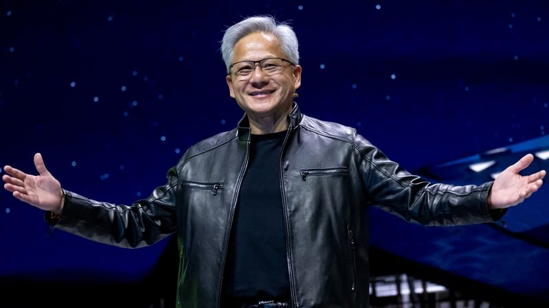
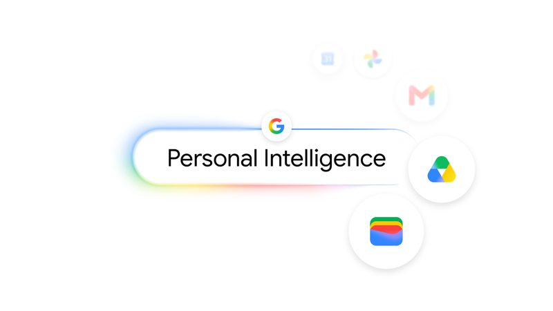
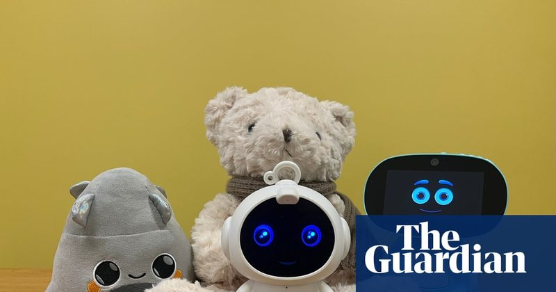
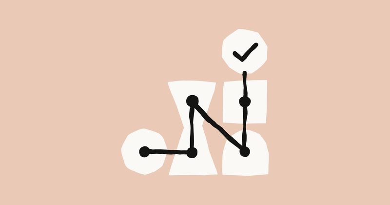
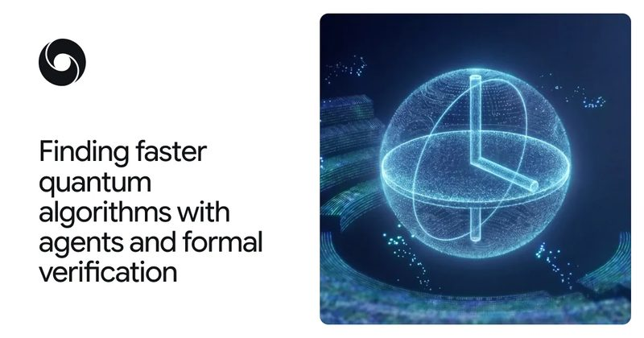
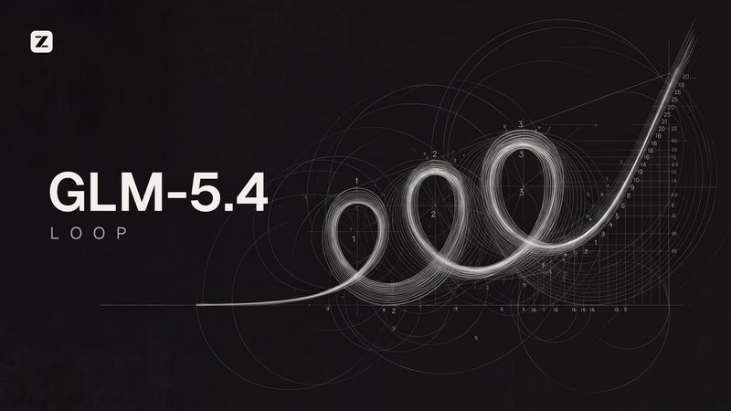
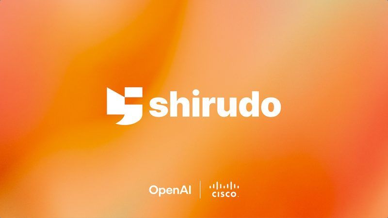

今日頭條
黃仁勳復任 Nvidia 執行長 PLUS：Google 搜尋 AI 模式可連 Wallet 與雲端硬碟
本期重點：Nvidia 董事會一致投票讓黃仁勳復任執行長，股價單日大漲約 31%；Google 搜尋的 AI 模式開放連結 Google Wallet，雲端硬碟與 Gemini App 隨後跟上。另有 150 多個兒少安全團體要求 Amazon、eBay 停賣 AI 玩具、美國兩州控告 Grok 生成未經同意的性影像、Anthropic 推出會自己審程式碼的 Claude Ship、Google DeepMind 用 AI 代理改良量子演算法、智譜發表 GLM-5.4，以及 OpenAI 與 Cisco 開源的 Linux 臨時防護工具 Shirudo。
📋 2026/11/24（二） 共 8 則 黃仁勳復任 Nvidia 執行長，股價大漲 31% Google 搜尋 AI 模式可連 Wallet 與雲端硬碟 150 多個團體要求 Amazon、eBay 停賣 AI 玩具 美國兩州控告 Grok 生成未經同意的性影像 Anthropic 推出 Claude Ship，AI 自己審程式碼 DeepMind 用 AI 代理改良量子演算法 智譜發表 GLM-5.4，主打「迴圈」架構 OpenAI 與 Cisco 開源 Shirudo，修補前先擋攻擊 
圖：CNBC／Getty Images 新聞 #1 黃仁勳復任 Nvidia 執行長，股價大漲 31% Nvidia 11 月 23 日宣布，董事會一致投票讓黃仁勳即刻復任總裁、執行長與董事。黃仁勳 11 月 13 日因個人醜聞與外國情報疑慮辭去執行長，董事會表示已聽取美國政府高層意見，確信復職不構成國安風險；CNBC 報導 Nvidia 股價當天收漲約 31%。
💡 跟你有什麼關係： Nvidia 是 AI 晶片龍頭，股價波動牽動台股與許多人的 ETF、基金；領導層回穩可能影響 AI 供應鏈的訂單與市場信心。
⚠️ 董事會強調獨立委員會的調查仍會繼續，並新設國安與出口管制委員會、招聘合規長；黃仁勳排定 12 月初到美國國會作證。股價數字引自 CNBC。
📰 原始來源：NVIDIA Newsroom（2026-11-23） ↗ 
圖：Google 新上線 #2 Google 搜尋 AI 模式可連 Wallet 與雲端硬碟 Google 11 月 23 日宣布，搜尋的 AI 模式「Personal Intelligence」開始開放連結 Google Wallet，Google 雲端硬碟與 Gemini App 會在接下來幾週跟上，加入原本的 Gmail、日曆與相簿。連結 Wallet 後可分析消費、規劃信用卡回饋；連結雲端硬碟則能參考文件、試算表與 PDF 回答問題。
💡 跟你有什麼關係： 以後在搜尋問「怎麼省錢」或「報稅要準備什麼」，答案可能直接根據你自己的帳單和文件；方便之餘，也代表你要決定願意讓 Google 讀多少個人資料。
⚠️ 需要自行選擇開啟（搜尋個人化設定的「已連結的應用程式」），可隨時關閉；Google 表示 Wallet 連結只能讀取，不能轉帳或管理資金。公告未說明台灣上線時程。
📰 原始來源：Google 官方部落格（2026-11-23） ↗ 
圖：The Guardian／AP（Rory Erlich） 政策 #3 150 多個團體要求 Amazon、eBay 停賣 AI 玩具 超過 150 個來自六大洲的兒少安全團體與專家 11 月 23 日發出公開信，要求 Amazon 與 eBay 在證明安全前停賣內建 AI 聊天機器人的玩具，並讓已購買者退款。信中指出 Amazon 美國站有超過 50 款 AI 玩具，其中一款標示 3 歲以上的兔子玩偶連到 ChatGPT，測試時竟回應不當的性相關內容。
💡 跟你有什麼關係： 聖誕節前很多家長在挑禮物，這類玩具便宜好買，但可能錄音、拍照或回答不適合兒童的內容，買之前值得多看一眼。
⚠️ Amazon 表示已下架被點名的商品並在審查中，eBay 表示持續檢討政策；加州已立法自 2027 年 1 月起禁止對 16 歲以下販售有陪伴型聊天機器人的玩具。
📰 原始來源：The Guardian（2026-11-23） ↗ 圖：維吉尼亞州檢察長辦公室 政策 #4 美國兩州控告 Grok 生成未經同意的性影像 維吉尼亞州檢察長 Jay Jones 與奧勒岡州檢察長 Dan Rayfield 11 月 23 日宣布分別提告，指控經營 X 與 Grok 的 SpaceX 及其 AI 子公司，未防止 Grok 生成兒童性虐待影像與未經同意的性化圖片，卻對外宣稱平台安全。起訴書引用研究估計，2025 年 12 月 29 日到 2026 年 1 月 8 日間 Grok 產生約 300 萬張性化圖片，其中約 2.3 萬張疑似兒童。
💡 跟你有什麼關係： 只要一張照片就可能被 AI 改成不雅影像；這類訴訟會影響 AI 公司未來必須內建多少防護，也提醒大家公開分享照片時多留意。
⚠️ 目前是州政府的指控，仍待法院審理；Grok 影像爭議始於 2026 年初，本則新進展是兩州正式提告。
📰 原始來源：維吉尼亞州檢察長辦公室（2026-11-23） ↗ 
圖：Anthropic 工具 #5 Anthropic 推出 Claude Ship，AI 自己審程式碼 Anthropic 11 月 23 日推出 Claude Ship，讓 Claude 審查 GitHub 上的程式碼修改（PR）、修正測試失敗與衝突，並依團隊寫好的規則自動核准例行修改。它由已正式推出的 Code Review，加上測試版的 PR Steward 與 Claude Approvals 組成，開放給 Claude Team 與 Enterprise 方案。
💡 跟你有什麼關係： 軟體團隊用 AI 寫程式越來越快，卡關的常是「等人審」；這類工具若可靠，App 和網站修 bug 的速度可能更快。
⚠️ 核准功能仍是測試版，官方建議先用「只觀察」模式；依 tokens 計費，會增加成本；開啟零資料保留或 HIPAA 設定的組織不能使用。
📰 原始來源：Claude 官方（2026-11-23） ↗ 
圖：Google DeepMind 研究 #6 DeepMind 用 AI 代理改良量子演算法 Google DeepMind 11 月 23 日發表研究，用多組 Gemini 4 代理改良知名量子演算法，並用 Lean 形式化證明每個結果正確。其中一個核融合模擬電路的運算成本降為原本的 11.8 分之一，所需錯誤更正量子位元從 5,650 降到 4,338；藥物代謝酵素 P450 的模擬也改善 2.5 倍。
💡 跟你有什麼關係： 量子電腦被期待用在新藥、能源等研究，演算法越省資源，越早能在真實機器上派上用場；AI 加上機器驗證，也讓結果比較不怕「AI 亂講」。
⚠️ 官方坦言即使改良後，這些演算法所需資源仍超過第一代錯誤更正量子電腦的能力，短期內不會直接變成產品。
📰 原始來源：Google DeepMind（2026-11-23） ↗ 
圖：Z.ai 工具 #7 智譜發表 GLM-5.4，主打「迴圈」架構 中國智譜（Z.ai）11 月 23 日發表旗艦模型 GLM-5.4，是它第一個採用 Loop Transformer 的模型：讓 28 層共享權重的網路跑兩輪，在 7,500 億參數下宣稱達到 2 到 3 兆參數模型的水準。官方說離峰速度可達每秒 200 tokens，並示範用寫程式的方式做影片、遊戲與 3D 模型。
💡 跟你有什麼關係： 不加參數也能讓模型「想得更深」，若成立可能降低 AI 服務成本，最後反映在更便宜的工具或訂閱上。
⚠️ 效能說法為官方自評，公開的對照實驗用的是 30B 測試模型；官方也承認模型容易陷入過長的思考迴圈。API 尚未開放，權重預計之後開源。
📰 原始來源：Z.ai 官方部落格（2026-11-23） ↗ 
圖：OpenAI 工具 #8 OpenAI 與 Cisco 開源 Shirudo，修補前先擋攻擊 OpenAI 與 Cisco 11 月 23 日推出開源工具 Shirudo（日文「盾牌」），用 Linux 的 eBPF 技術在正式修補前加上臨時防護，不必重開機或停機。官方示範用 Codex 產生的防護，成功在 Elasticsearch 持續運作下擋下 Java4Shell 漏洞攻擊。
💡 跟你有什麼關係： 很多網站和服務從發現漏洞到真正修好要好幾天，這段空窗期最危險；這類工具若普及，你常用的服務被駭的機會可能降低。
⚠️ 屬於給資安與維運人員的工具，一般使用者不需要操作；每個防護仍須人員核准才會部署，目前為早期開源專案。
📰 原始來源：OpenAI 官方（2026-11-23） ↗ ✅ 2026/11/24（二） 可以做： 準備聖誕禮物時，如果玩具標示內建 AI 聊天功能，先看清楚是否需要連網、會不會錄音、建議年齡幾歲，以及廠商的隱私說明，再決定要不要買給小孩。
🗂️ 過去 14 天